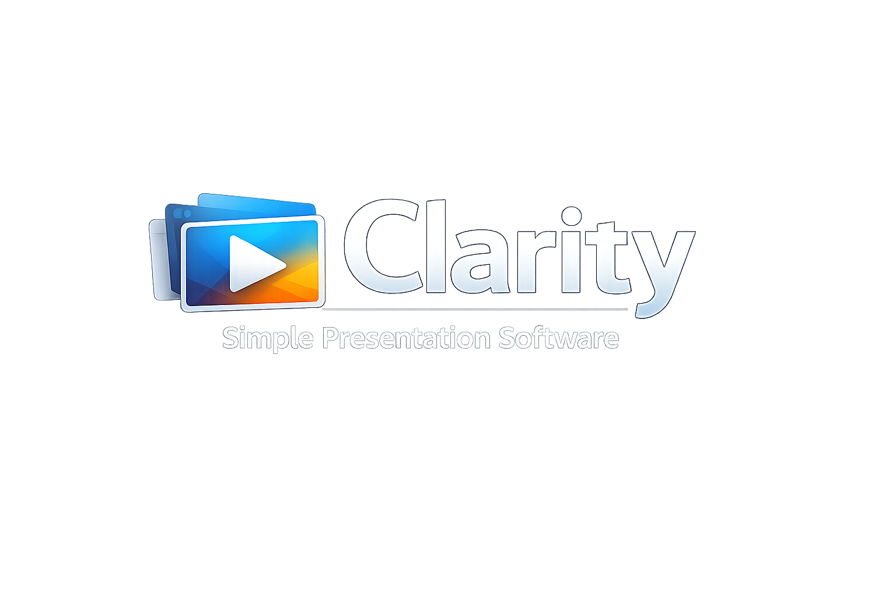

See It in Action
A clean interface designed for Sunday mornings when simplicity matters most.



v0.1.1-beta.1.1
Free, fast, and reliable. Everything your worship team needs — nothing they don't.
Built for simplicity and reliability. No bloat, no learning curve, no subscription fees.
Solid colors, gradients, images, and video backgrounds. Cascading backgrounds automatically apply across slide groups.
Learn moreImport songs from SongSelect and OpenLyrics formats. Search your library, organize by tags, and track CCLI usage.
Learn moreThree scripture sources in one dialog: local Bible database, ESV API, and API.bible with 2,500+ versions. Red-letter edition support included.
Learn moreMulti-monitor fullscreen output, confidence monitor for your speaker, and NDI streaming for broadcast workflows.
Learn moreControl your presentation from any phone or tablet. Connect with a QR code, secured with a PIN. No app install required.
Learn more15+ built-in themes designed for readability. Text legibility controls, outline and shadow options, and smooth transitions.
Learn moreNo complicated setup. No training videos. Just build your service and go.
Create a playlist of songs, scripture readings, and custom slides. Drag and drop to reorder.
Send your presentation to the projector or screen. The output runs in its own window on any connected display.
Navigate with keyboard shortcuts or the mobile remote. Your confidence monitor keeps you on track.
A clean interface designed for Sunday mornings when simplicity matters most.
Clarity is free, open source, and licensed under the GPL 3.0. Download it today and simplify your worship presentations.
v0.1.1-beta.1.1 • Windows 10+ • 64-bit